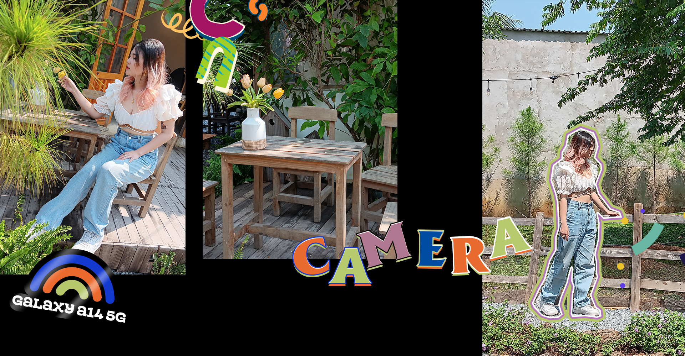
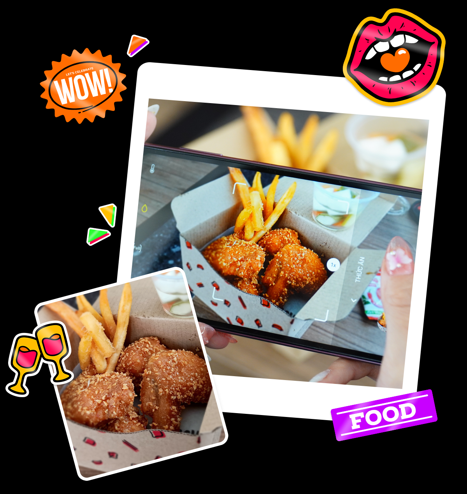

Một ngày bình thường của GenZ “hướng ngoại” như mình sẽ trải qua rất nhiều hoạt động như học hành, họp nhóm, chơi game, ăn uống,... và một bước cực kỳ quan trọng là tìm một điểm cafe đẹp để check-in sống ảo. Để trải nghiệm trọn vẹn những thứ trên, Galaxy A04s sẽ là chiếc smartphone đồng hành cùng mình và các bạn trong chủ đề này.
Điểm khiến mình quyết định tậu chiếc Galaxy A04s này chính là thời lượng pin khủng 5.000 mAh của nó, chỉ cần nhìn tới thông số mình đã để dàng bị “thao túng tâm lý” rằng chỉ cần xài thôi không cần quan tâm Pin làm gì.
Và để kiểm chứng điều đó có thật hay không, mời các bạn hãy cùng mình bắt đầu một ngày mới bằng cách rút sạc chiếc Galaxy A04s buổi sáng với 100% pin và... đi ăn sáng. Gét gô!
Làm gì làm, các bạn nhớ không được quên ăn sáng nhé, vì nó sẽ cung cấp năng lượng cho bạn bắt đầu một ngày mới thật năng động. Thử chụp một tấm ảnh đồ ăn bằng chế độ chụp thức ăn của Galaxy A04s xem cũng ra gì và này nọ đó chứ.
Trong lúc ăn mình cũng tranh thủ lướt YouTube và Tiktok để xem hôm nay có trends gì hay ho nào. Mình không phải là một tín đồ của Tiktok, tuy nhiên những lúc rảnh rỗi mình cũng hay tự quay các clip Tiktok bằng chiếc Galaxy A04s này để up lên mạng cho vui, theo mình đây là một việc làm xả stress rất hiệu quả mà các bạn cũng nên thử.
Ăn sáng xong rồi, giờ kiếm quán Cafe nào để ôn bài và chuẩn bị các bài tập mới thôi. Ôn bài nhưng cũng không quên lựa một quán cafe thật “style” để có mood.

Ngoài ra, vì là một người khá hướng ngoại nên mình còn có sở thích “review” lại các quán cafe mà mình thấy ưng lên mạng xã hội. Để có những bức ảnh review-sống ảo nhiều like nhất thì mình tự tin đã có Galaxy A04s đồng hành với những tính năng cực trendy như chụp macro, những bài review của mình sẽ ấn tượng hơn với những bức ảnh cận cảnh.
Thôi tập trung ôn bài thôi nào, đến khúc này thì mình lại phải khoe với các bạn một lần nữa khi Galaxy A04s với chiếc màn hình to lên đến 6.5 inch, giúp ích rất nhiều khi mình cần xem nhanh một bài tập, file thuyết trình nào đó ngay trên điện thoại, thậm chí nếu cần mình có thể chỉnh sửa trực tiếp trên máy mà không cần đụng đến máy tính.
Dù tấm nền HD+ không quá cao, tuy nhiên nó lại phù hợp với nhu cầu và số tiền mình bỏ ra cũng không quá nhiều nên mình hoàn toàn hài lòng. À mà điểm cộng mà màn HD+ đem lại đó là thời lượng pin cực kì trâu, nói đến đây mới nhìn lại lượng pin và sáng giờ chúng mình sử dụng chỉ có 10% mà thôi, rất xuất sắc đúng không?
Với chiếc màn hình 6.5 inch này, việc xem Tiktok hay YouTube rất thoải mái vì màn to, màu sắc dễ nhìn, độ tương phản tốt vì được trang bị tấm nền IPS LCD, loa ngoài nghe cũng lớn nữa. Ngoài ra nhờ thiết kế màn hình giọt nước trên Galaxy A04s (đây là kiểu màn hình mà mình thích nhất) nên ít bị che nội dung mà cảm giác lại liền lạc.
Một điểm nữa trên màn hình của Galaxy A04s là nó được trang bị màn hình tần số quét cao 90Hz và kính cường lực Gorilla Glass 3, khiến mọi trải nghiệm lướt, vuốt hay chơi game của mình trên chiếc máy này đều cảm thấy rất mượt mà, nhiều lúc quên luôn là mình đang xài một chiếc điện thoại “em út” của nhà Samsung.
Quay trở lại với phần camera, lần này Samsung đã chơi “tất tay” khi trang bị camera tận 50MP, so với đời tiền nhiệm Galaxy A03s chỉ có 13MP mà thôi. Mình thì không quá quan trọng thông số, nhưng mình khá tự tin khi cầm Galaxy A04s để chụp ảnh. Hãy nhớ: Chỉ cần bạn tự tin, mọi chiếc camera trong tay bạn đều có thể ghi lại “siêu phẩm”.
Camera trước của Galaxy A04s có độ phân giải 5MP và trang bị tính năng tự làm đẹp. Trước giờ thì nhiều bạn chắc cũng biết chất ảnh của Samsung đều thiên về làm đẹp tự nhiên, không quá ảo như các hãng khác. Đẹp nhưng vẫn nhận ra mình, đó mới là điều quan trọng nhất.
Bây giờ hãy cùng mình xem lại những hình ảnh mình chụp được qua ống kính của Galaxy A04s

Ngoài chụp ảnh, xem Tiktok, mình còn rất thích theo rank cùng bạn bè. Ban đầu mình cũng khá lo lắng vì mức giá rẻ không biết có chơi nổi các tựa game đòi hỏi cấu hình mạnh như Liên Quân Mobile không, nhưng con Chip Exynos 850 8 nhân và 4GB RAM của máy đáp ứng khá OK nhu cầu của mình.
Khi để mức setting đồ hoạ cơ bản thì mình chơi hoàn toàn ổn, không hề có hiện tượng giật lag gì cả. Còn những tựa game đơn giản như Angry Birds hay Candy Crush thì như cái ghế vậy, vì nó “không phải bàn”.
Giờ là 17 giờ chiều, sau 2 tiếng leo Rank thì mức pin của Galaxy A04s vẫn còn hơn đến 60%, thật đáng khâm phục. Nếu các bạn quan tâm về pin nhiều hơn thì tụi mình đã có bài đánh giá chi tiết pin, các bạn có thể xem thêm tại đây.
Hết ngày rồi, cùng nhìn lại xem Galaxy A04s có những ưu điểm gì đáng mua ngay nào. Theo mình, Galaxy A04s không phải là chiếc máy ngon nhất (do giá ở phân khúc quá rẻ mà), nhưng đối với nhu cầu của mình nó là phù hợp nhất. Một thiết kế đẹp, màn hình to giải trí tốt, pin thì xài cả ngày không hết. Nhu cầu của mình chỉ có nhiêu đó, còn bạn? Liệu Galaxy A04s có xứng đáng làm người bạn đồng hành với bạn không? Hãy cho mình biết cảm nghĩ nhé.